Wada basins of attraction and bifurcations in chaotic dynamical systems
wadaR implements multiple computational methods for detecting Wada basins of attraction in dynamical systems. Wada basins are a remarkable type of fractal basin structure where a single boundary simultaneously separates three or more basins, so that every boundary point is arbitrarily close to all attractors. This extreme form of unpredictability has profound implications for chaos theory, control systems, and predictability in nonlinear dynamics. The package provides three published detection methods plus theoretical support for the classical Nusse-Yorke method. All computational kernels are parallelized via Rcpp/OpenMP.
What is inside
| Layer | Components | Count |
|---|---|---|
| Attractor specification |
attractor_point, attractor_cycle, attractor_exit, attractor_outcome
|
4 |
| System catalogue |
forced_damped_pendulum, henon_heiles_system, newton_fractal_system, multispecies_competition, compiled_system, is.compiled_system, compile_basin_function, initial_state_fixed_energy
|
8 |
| Basin computation |
compute_basins, compute_basins_3d, compute_newton_basins, compute_competition_basins, simulate_competition, detect_attractors, extract_basin, get_boundary, merge_basins
|
9 |
| Wada detection |
detect_wada, wada_grid_method, wada_merging_method, wada_straddle_method, hausdorff_distance
|
5 |
| Basin entropy and bifurcation |
basin_entropy, bifurcation_basins, animate
|
3 |
| 3D visualization (plotly) |
plot_3d_basins, slice_3d_basins, animate_3d_rotation
|
3 |
| Visualization helpers |
palettes, palette_ramp
|
2 |
| Interactive dashboard | shinywadaR |
1 |
| S3 classes (with print, summary, plot) |
wada_basins, wada_grid_result, wada_merging_result, wada_straddle_result, wada_analysis, basin_entropy_result, merged_basins, compiled_system, attractor_detection, bifurcation_result, basin_result_3d, multispecies_competition
|
12 |
The package ships canonical-validation regression tests (tests/testthat/test-validation-canonical.R) that pin the Wada classification on the Newton fractal for z^3 - 1, the forced damped pendulum at F = 1.66 (Wada) and F = 2.5 (non-Wada control), and the Huisman-Weissing 5- and 8-species competition systems.
See the accompanying vignette("wada-basins") for comprehensive mathematical theory, algorithms, and extensive examples; vignette("api") for the architecture map.
Installation
# Check if devtools is already installed. If not, install it.
if (!requireNamespace("devtools", quietly = TRUE)) {
install.packages("devtools")
}
# Install from GitHub (development version)
devtools::install_github("robustecologies/wadaR")
# Or install locally
devtools::install()Mathematical background
What are Wada basins?
Let \(\mathcal{M} \subseteq \mathbb{R}^d\) denote the phase space of the dynamical system, and let \(\phi_t: \mathcal{M} \to \mathcal{M}\) represent the time-evolution operator (flow or map), such that \(\phi_t(x)\) denotes the state of the system at time \(t\) given an initial condition \(x \in \mathcal{M}\). We assume the system possesses a finite collection of disjoint, asymptotically stable compact invariant sets, termed attractors, denoted by \(\{A_1, \ldots, A_{N_A}\}\).
The basin of attraction \(B_i\) associated with the attractor \(A_i\) is defined as the set of all initial conditions \(x \in \mathcal{M}\) whose trajectories asymptotically approach \(A_i\) as time tends to infinity. Formally:
\[B_i = \lbrace x \in \mathcal{M} : \lim_{t \to \infty} \text{dist}(\phi_t(x), A_i) = 0 \rbrace\]
where \(\text{dist}(y, A) = \inf_{z \in A} \|y - z\|\) represents the minimum Euclidean distance from a point \(y\) to the set \(A\).
Let \(\partial S\) denote the topological boundary of a set \(S\), defined as \(\partial S = \overline{S} \setminus \text{int}(S)\), where \(\overline{S}\) is the closure and \(\text{int}(S)\) is the interior of \(S\).
The collection of basins \(\{B_1, \ldots, B_{N_A}\}\) is said to possess the Wada property if the system has at least three attractors (\(N_A \geq 3\)) and the boundaries of all basins are identical:
\[\partial B_1 = \partial B_2 = \cdots = \partial B_{N_A} = \mathcal{J}\]
where \(\mathcal{J}\) is the common boundary set (invariant set). A direct topological consequence of this property is that for every point \(x \in \mathcal{J}\) on the boundary, any open neighborhood \(U_\epsilon(x)\) of radius \(\epsilon > 0\) centered at \(x\) must have a non-empty intersection with every basin:
\[U_\epsilon(x) \cap B_i \neq \emptyset, \quad \forall i \in \{1, \ldots, N_A\}\]
This implies that a state initialized with infinitesimal uncertainty on the boundary \(\mathcal{J}\) has a non-zero probability of evolving toward any of the \(N_A\) attractors.
Why does it matter?
Wada basins represent an extreme form of final-state sensitivity: arbitrarily small uncertainties in initial conditions can lead to convergence to any of the system’s attractors. This has implications for climate prediction, where small errors can lead to qualitatively different outcomes; ecological dynamics, where ecosystems with multiple stable states may have Wada boundaries; engineering control, where understanding basin structure is crucial for robust design; and celestial mechanics, where spacecraft trajectory planning near Wada boundaries requires special consideration.
Quick start
Example 1: Newton fractal (fastest computation)
Newton fractals are mathematically proven to have Wada basins for \(n \geq 3\) roots. They compute very fast since no ODE integration is required:
# Compute Newton fractal basins for z^3 - 1 = 0
newton_basins <- compute_newton_basins(
n_roots = 3,
x_range = c(-2, 2),
y_range = c(-2, 2),
resolution = 800
)
# Visualize with default palette
plot(newton_basins, title = "Newton fractal: z^3 - 1 = 0")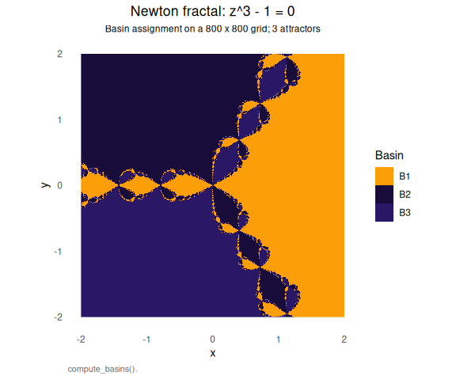
Example 2: Forced damped pendulum
The forced damped pendulum is the canonical example of a system with Wada basins:
\[\ddot{x} + \gamma \dot{x} + \sin(x) = F \cos(t)\]
# Create system with Wada basins (F = 1.66)
pendulum <- forced_damped_pendulum(forcing = 1.66, damping = 0.2)
print(pendulum$description)
#> [1] "Forced damped pendulum: x'' + 0.20*x' + sin(x) = 1.66*cos(t)"
# Compute basins of attraction (low resolution for speed)
basins <- compute_basins(
pendulum,
x_range = c(-pi, pi),
y_range = c(-3, 3),
resolution = 500,
verbose = TRUE
)
#> ⚙ Computing basins: 500x500 grid, 3 attractors
#> ⚠ Basin computation may take 1.0 minutes at resolution 500x500
#> ¡ Total RK4 steps: 2.50e+09, using 20 cores
#> ¡ Using Rcpp parallel (pendulum, 19 cores)
#> ¡ Press Esc to abort computation
#> ⏱ Completed in 26.53 seconds
#> ⚠ 134815 points did not converge (53.93%)
# Visualize with custom colors using palettes()
plot(basins,
title = "Wada basins: forced damped pendulum",
colors = palettes(palette = "okabe_ito")[1:3])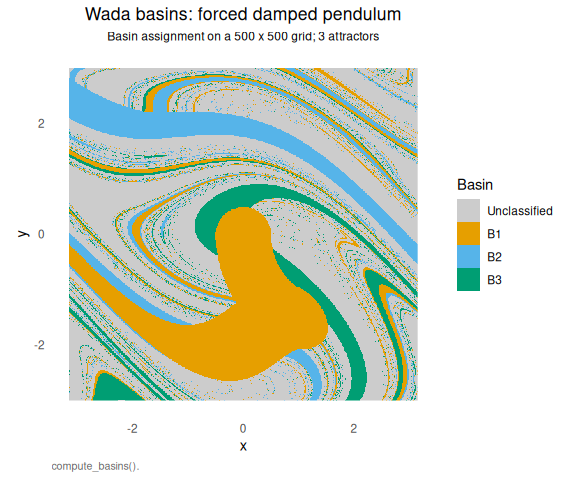
Wada detection methods
Basin entropy
Basin entropy quantifies the unpredictability of final states given uncertainty in initial conditions:
# Compute basin entropy for Newton fractal
entropy_newton <- basin_entropy(newton_basins, box_size = 2)
print(entropy_newton)
#> Basin entropy analysis
#> ----------------------------------------
#> Number of attractors: 3
#> Box size: 2 x 2
#> Total boxes: 160000
#> Boundary boxes: 5152 (3.2%)
#>
#> Entropy results:
#> S_b (total): 0.0343 bits
#> S_max: 1.5850 bits
#> S_normalized: 0.0216 (0 = monochromatic, 1 = max uncertainty)
#> S_boundary: 1.0657 bits (boundary boxes only)
# Visualize local entropy distribution
plot(entropy_newton)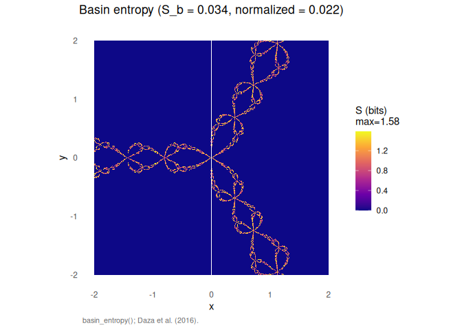
# Compute basin entropy for pendulum
entropy_pendulum <- basin_entropy(basins, box_size = 2)
print(entropy_pendulum)
#> Basin entropy analysis
#> ----------------------------------------
#> Number of attractors: 3
#> Box size: 2 x 2
#> Total boxes: 37280
#> Boundary boxes: 4539 (12.2%)
#>
#> Entropy results:
#> S_b (total): 0.1158 bits
#> S_max: 1.5850 bits
#> S_normalized: 0.0730 (0 = monochromatic, 1 = max uncertainty)
#> S_boundary: 0.9508 bits (boundary boxes only)Merging method [3]
The merging method compares slim boundaries when basins are merged. For Wada basins, all slim boundaries are identical:
# Apply merging method to Newton fractal
merge_newton <- wada_merging_method(newton_basins, verbose = TRUE)
#> ¡ Basin matrix: 800 x 800, 3 attractors
#> ⚙ Merging method: 800x800 grid, 3 attractors
#> ¡ Computing boundaries (parallel Rcpp)...
#> ⚙ Boundaries [============= ] 33.3% | ETA: 0s ⚙ Boundaries [=========================== ] 66.7% | ETA: 0s ⚙ Boundaries [========================================] 100.0% | ETA: 0s
#> ⚙ Boundaries [========================================] 100.0% | ETA: 0s
#> ⏱ Boundary extraction: 0.03 seconds
#> ¡ Computing Hausdorff distances (parallel k-d tree)...
#> ⏱ Distance computation: 1.12 seconds
#> ¡ Results:
#> max_d = 0.0212
#> min_d = 0.0200
#> (max_d - min_d) / min_d = 0.0607
#> max_d / phase_space_size = 0.0038
#> ✔ Basin has the WADA PROPERTY
print(merge_newton)
#> Wada basin detection - Merging method
#> ----------------------------------------
#> Number of attractors: 3
#> Boundary points per merged basin:
#> B_1: 20010 points
#> B_2: 20084 points
#> B_3: 20084 points
#>
#> Hausdorff distances:
#> max_d = 0.0212
#> min_d = 0.0200
#> (max_d - min_d) / min_d = 0.0607
#>
#> Result: WADA BASIN
# Apply merging method to pendulum basins
merge_pendulum <- wada_merging_method(basins, verbose = TRUE)
#> ¡ Basin matrix: 500 x 500, 3 attractors
#> ⚙ Merging method: 500x500 grid, 3 attractors
#> ¡ Computing boundaries (parallel Rcpp)...
#> ⚙ Boundaries [============= ] 33.3% | ETA: 0s ⚙ Boundaries [=========================== ] 66.7% | ETA: 0s ⚙ Boundaries [========================================] 100.0% | ETA: 0s
#> ⚙ Boundaries [========================================] 100.0% | ETA: 0s
#> ⏱ Boundary extraction: 0.01 seconds
#> ¡ Computing Hausdorff distances (parallel k-d tree)...
#> ⏱ Distance computation: 3.31 seconds
#> ¡ Results:
#> max_d = 0.6684
#> min_d = 0.3903
#> (max_d - min_d) / min_d = 0.7125
#> max_d / phase_space_size = 0.0769
#> ⚠ Basin is PARTIALLY WADA or NOT WADA
print(merge_pendulum)
#> Wada basin detection - Merging method
#> ----------------------------------------
#> Number of attractors: 3
#> Boundary points per merged basin:
#> B_1: 36025 points
#> B_2: 33391 points
#> B_3: 32274 points
#>
#> Hausdorff distances:
#> max_d = 0.6684
#> min_d = 0.3903
#> (max_d - min_d) / min_d = 0.7125
#>
#> Result: POSSIBLY PARTIALLY WADA
# Visualize merging result
plot(merge_newton, basins = newton_basins)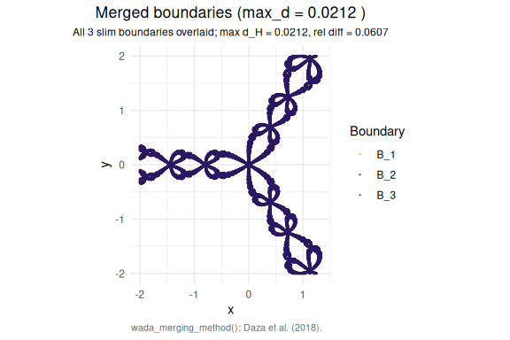
Grid method [2]
The grid method tests whether a third color can be found between any two colors at finer resolutions:
# Apply grid method to Newton fractal
grid_newton <- wada_grid_method(newton_basins, verbose = TRUE)
#> ⚠ Using default pendulum attractors for refinement
#> ¡ Basin matrix: 800 x 800, 3 attractors
#> ⚙ Grid method: 800x800 grid, 3 attractors
#> ¡ Classifying boundary boxes (parallel Rcpp, 19 cores)...
#> ⏱ Classification: 0.02 seconds
#> ¡ Refining 12572 boundary boxes with ODE bisection (parallel Rcpp, 19 cores)...
#> ¡ Press Esc to abort computation
#> ⏱ Refinement: 50.80 seconds
#> ¡ Results:
#> G_2: 8371 boxes (W_2 = 0.2663)
#> G_3: 23067 boxes (W_3 = 0.7337)
#> ⚠ Basin is PARTIALLY WADA or NOT WADA
print(grid_newton)
#> Wada basin detection - Grid method
#> ----------------------------------------
#> Number of attractors: 3
#> Total boundary boxes: 31438
#>
#> Boundary classification:
#> G_2 (boundary of 2 basins): 8371 boxes (26.63%)
#> G_3 (boundary of 3 basins): 23067 boxes (73.37%)
#>
#> Result: PARTIALLY WADA BASIN
# Apply grid method to pendulum basins
grid_pendulum <- wada_grid_method(basins, verbose = TRUE)
#> ¡ Basin matrix: 500 x 500, 3 attractors
#> ⚙ Grid method: 500x500 grid, 3 attractors
#> ¡ Classifying boundary boxes (parallel Rcpp, 19 cores)...
#> ⏱ Classification: 0.01 seconds
#> ¡ Refining 39679 boundary boxes with ODE bisection (parallel Rcpp, 19 cores)...
#> ¡ Press Esc to abort computation
#> ⏱ Refinement: 149.72 seconds
#> ¡ Results:
#> G_2: 21013 boxes (W_2 = 0.4593)
#> G_3: 24736 boxes (W_3 = 0.5407)
#> ⚠ Basin is PARTIALLY WADA or NOT WADA
print(grid_pendulum)
#> Wada basin detection - Grid method
#> ----------------------------------------
#> Number of attractors: 3
#> Total boundary boxes: 45749
#>
#> Boundary classification:
#> G_2 (boundary of 2 basins): 21013 boxes (45.93%)
#> G_3 (boundary of 3 basins): 24736 boxes (54.07%)
#>
#> Result: PARTIALLY WADA BASIN
# Visualize grid result showing M values
plot(grid_newton, basins = newton_basins)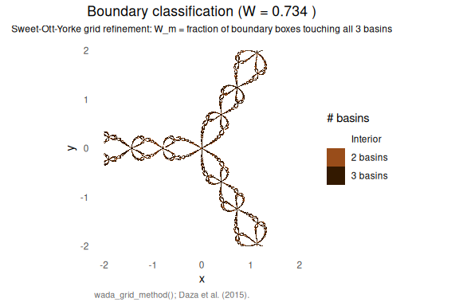
Comparing Wada vs partial Wada
Different forcing amplitudes produce different basin structures:
library(patchwork)
# Wada case (F = 1.66)
p1 <- forced_damped_pendulum(forcing = 1.66)
b1 <- compute_basins(p1, c(-pi, pi), c(-3, 3), resolution = 300, verbose = FALSE)
# Partial Wada case (F = 1.71)
p2 <- forced_damped_pendulum(forcing = 1.71)
b2 <- compute_basins(p2, c(-pi, pi), c(-3, 3), resolution = 300, verbose = FALSE)
# Create plots
plot1 <- plot(b1, title = "F = 1.66 (Wada)",
colors = palettes(palette = "alhambra_nazari")[1:3])
plot2 <- plot(b2, title = "F = 1.71 (partial Wada)",
colors = palettes(palette = "alhambra_nazari")[1:3])
plot1 + plot2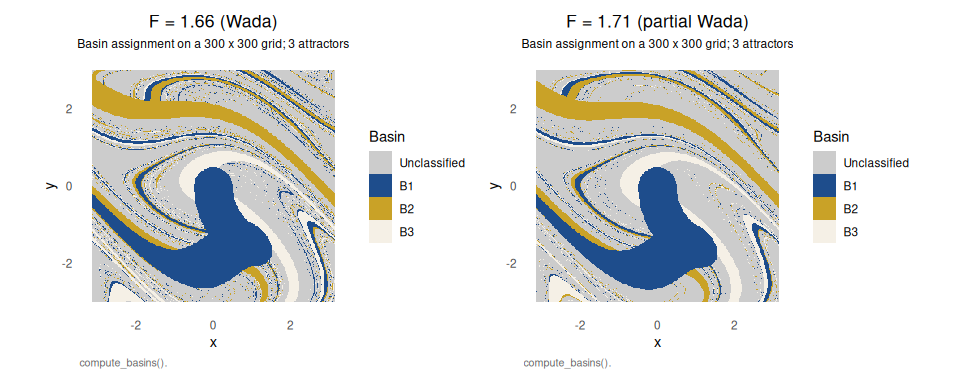
# Compare Wada detection results
cat("=== F = 1.66 ===\n")
#> === F = 1.66 ===
r1_merge <- wada_merging_method(b1, verbose = FALSE)
#> ¡ Basin matrix: 300 x 300, 3 attractors
cat(sprintf("Merging method: rel_diff = %.4f, Wada = %s\n",
r1_merge$relative_diff, r1_merge$is_wada))
#> Merging method: rel_diff = 0.8578, Wada = FALSE
cat("\n=== F = 1.71 ===\n")
#>
#> === F = 1.71 ===
r2_merge <- wada_merging_method(b2, verbose = FALSE)
#> ¡ Basin matrix: 300 x 300, 3 attractors
cat(sprintf("Merging method: rel_diff = %.4f, Wada = %s\n",
r2_merge$relative_diff, r2_merge$is_wada))
#> Merging method: rel_diff = 0.3287, Wada = FALSECustom color palettes
palettes() and palette_ramp() delegate to the koloRo package, which ships 282 palettes across scientific, colorblind-safe, alhambra, chameleons, natural, cultural, artistic and seasonal categories; the colorblind-safe okabe_ito palette is retained as a built-in fallback so the bundled plots render even when koloRo is not installed. To unlock the full catalogue, install koloRo with remotes::install_github("robustecologies/koloRo"); thereafter every palette name documented in koloRo::list_palettes() is accessible directly through wadaR::palettes().
# Three palettes from the koloRo catalogue, accessed transparently via wadaR.
p_okabe <- plot(newton_basins,
colors = palettes(palette = "okabe_ito")[1:3],
title = "Colorblind palette (Okabe-Ito)")
p_alhambra <- plot(newton_basins,
colors = palettes(palette = "alhambra_nazari")[c(1,2,5)],
title = "Alhambra Nazarí palette")
p_default <- plot(newton_basins,
colors = palettes(palette = "RElab_main")[c(1,4,5)],
title = "RElab main palette")
p_okabe + p_alhambra + p_default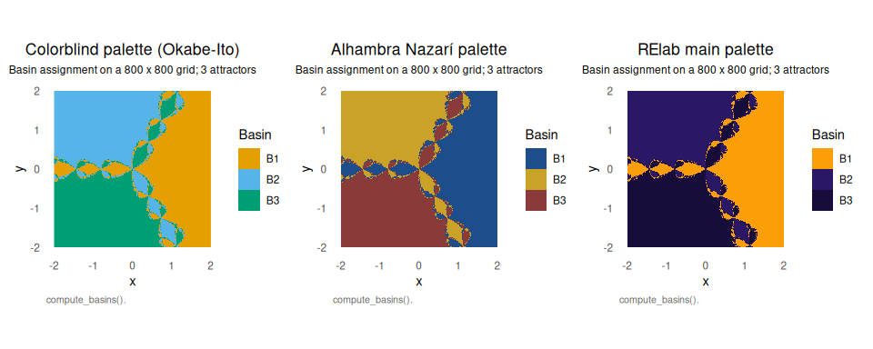
Advanced features
Custom dynamical systems
Define your own systems through compiled_system(). The canonical route accepts a janos::model_spec object via the model argument: dynamics are written as R formulas, and the internal adapter calls janos::model_spec_rhs_cpp() to inline the per-state right-hand sides into the OpenMP basin kernel. The example below builds the bistable forced Duffing oscillator, computes its basins on a 300x300 grid, applies Wada detection, and renders the result.
# Bistable forced Duffing oscillator as a janos model_spec
duffing_spec <- janos::model_spec(
rhs = list(
x ~ y,
y ~ -delta * y - alpha * x - beta * x^3 + gamma_f * cos(omega * t)
),
state_names = c("x", "y"),
parms = list(delta = 0.3, alpha = -1, beta = 1, gamma_f = 0.5, omega = 1.2)
)
# Adapt to wadaR's basin kernel (OpenMP-parallel, numerically identical
# to the raw cpp_dynamics route)
duffing <- compiled_system(
model = duffing_spec,
attractors = list(
attractor_point(c( 1, 0), 0.3, "right well"),
attractor_point(c(-1, 0), 0.3, "left well"),
attractor_point(c( 0, 0), 0.3, "origin")
),
name = "Duffing oscillator (from janos model_spec)",
verbose = FALSE
)
# Compute basins and apply Wada diagnostics
basins <- compute_basins(duffing, c(-2, 2), c(-2, 2),
resolution = 300, verbose = FALSE)
entropy <- basin_entropy(basins)
grid_result <- wada_grid_method(basins)
#> ¡ Basin matrix: 300 x 300, 3 attractors
#> ⚙ Grid method: 300x300 grid, 3 attractors
#> ¡ Classifying boundary boxes (parallel Rcpp, 19 cores)...
#> ⏱ Classification: 0.00 seconds
#> ¡ Refining 18881 boundary boxes with ODE bisection (parallel Rcpp, 19 cores)...
#> ¡ Press Esc to abort computation
#> ⏱ Refinement: 139.61 seconds
#> ¡ Results:
#> G_2: 10973 boxes (W_2 = 0.4252)
#> G_3: 14836 boxes (W_3 = 0.5748)
#> ⚠ Basin is PARTIALLY WADA or NOT WADA
plot(basins,
title = "Duffing basins specified via janos::model_spec()",
colors = palettes(palette = "okabe_ito")[1:3])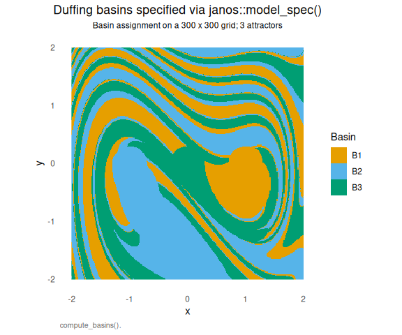
For users without janos installed, or when ad-hoc kernel snippets are preferred over a formula-based specification, compiled_system() also accepts the dynamics as a raw C++ string under the state[i] and bare-parameter conventions of the basin template:
duffing <- compiled_system(
cpp_dynamics = '
deriv[0] = state[1];
deriv[1] = -delta * state[1] - alpha * state[0]
- beta * state[0] * state[0] * state[0]
+ gamma_f * cos(omega * t);
',
attractors = list(
attractor_point(c( 1, 0), 0.3, "right well"),
attractor_point(c(-1, 0), 0.3, "left well"),
attractor_point(c( 0, 0), 0.3, "origin")
),
dim = 2, type = "ode",
params = list(delta = 0.3, alpha = -1, beta = 1, gamma_f = 0.5, omega = 1.2),
name = "Duffing oscillator"
)The two routes produce numerically identical compiled objects.
Bifurcation analysis
Analyze how basin structure changes across parameter values:
# Sweep forcing amplitude from 1.5 to 1.8 for the forced damped pendulum
bif_result <- bifurcation_basins(
cpp_dynamics = '
deriv[0] = state[1];
deriv[1] = -damping * state[1] - sin(state[0]) + forcing * cos(t);
',
params = list(damping = 0.2, forcing = 1.66),
sweep_param = "forcing",
sweep_values = seq(1.5, 1.8, length.out = 10),
attractors = list(
attractor_point(c(0, 0), 0.5, "Origin"),
attractor_point(c(2*pi, 0), 0.5, "+2pi"),
attractor_point(c(-2*pi, 0), 0.5, "-2pi")
),
x_range = c(-pi, pi),
y_range = c(-3, 3),
resolution = 200,
verbose = TRUE
)
#> ⚙ Bifurcation analysis: sweeping 'forcing'
#> 10 parameter values, 200x200 grid
#>
#> ⚙ Compiling sweep-mode C++ (single compilation)...
#> ✔ Sweep compilation successful
#> ⚙ Sweep [==== ] 10.0% | ETA: 80s ⚙ Sweep [======== ] 20.0% | ETA: 56s ⚙ Sweep [============ ] 30.0% | ETA: 46s ⚙ Sweep [================ ] 40.0% | ETA: 37s ⚙ Sweep [==================== ] 50.0% | ETA: 30s ⚙ Sweep [======================== ] 60.0% | ETA: 24s ⚙ Sweep [============================ ] 70.0% | ETA: 18s ⚙ Sweep [================================ ] 80.0% | ETA: 12s ⚙ Sweep [==================================== ] 90.0% | ETA: 6s ⚙ Sweep [========================================] 100.0% | ETA: 0s
#> ⚙ Sweep [========================================] 100.0% | ETA: 0s
#>
#> ✔ Bifurcation analysis complete
# Visualize: basin entropy vs. parameter
plot(bif_result, type = "entropy")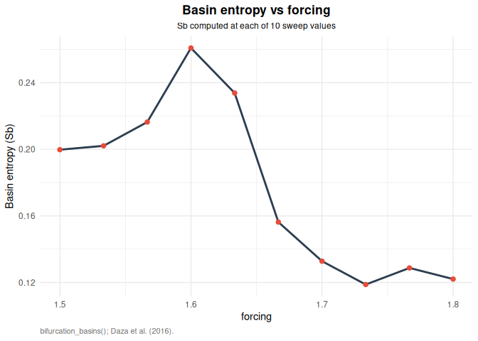
# Faceted view of basins at each parameter value
plot(bif_result, type = "basins")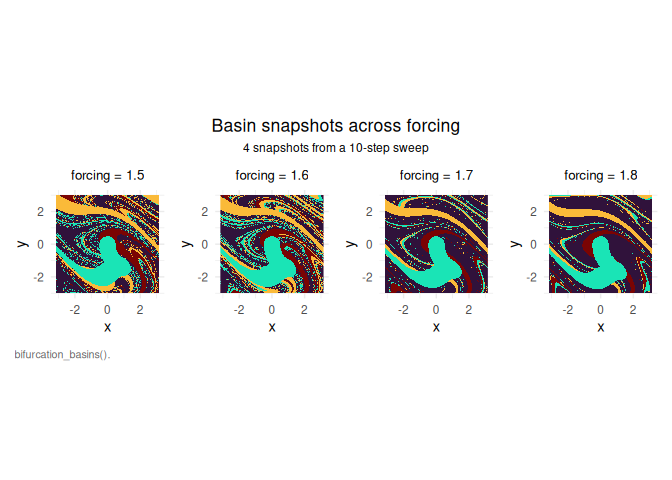
# Create animation of basin evolution (requires gganimate)
# animate(bif_result, filename = "bifurcation.gif", fps = 2)3D visualization
Visualize basins in three-dimensional projections:
# 3D basins for Lorenz system
basins_3d <- compute_basins_3d(
cpp_dynamics = '
deriv[0] = sigma * (state[1] - state[0]);
deriv[1] = state[0] * (rho - state[2]) - state[1];
deriv[2] = state[0] * state[1] - beta_l * state[2];
',
params = list(sigma = 10, rho = 28, beta_l = 8.0/3.0),
attractors = list(
attractor_point(c(sqrt(72), sqrt(72), 27), 3.0, "Right"),
attractor_point(c(-sqrt(72), -sqrt(72), 27), 3.0, "Left"),
attractor_point(c(0, 0, 0), 1.0, "Origin")
),
dim = 3,
x_range = c(-20, 20),
y_range = c(-20, 20),
z_range = c(0, 50),
resolution = 50,
verbose = TRUE
)
#> ⚙ Computing 3D basins: 50x50x50 = 125,000 points
#> ⚙ Compiling 3D basin computation...
#> ✔ Compilation successful
#> ⏱ Computing basins...
#> ✔ Found 4 distinct basins
# Interactive 3D visualization (requires plotly)
plot_3d_basins(basins_3d, type = "scatter")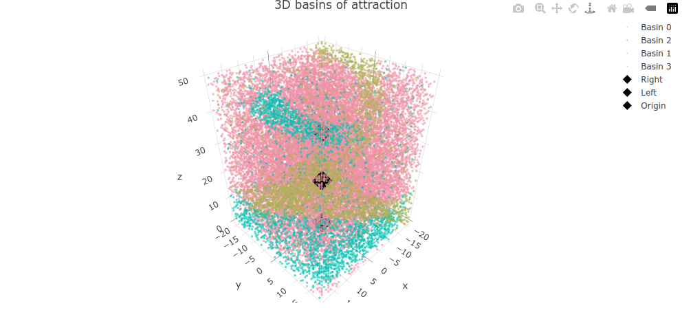
# Extract 2D slice for detailed analysis
slice_z25 <- slice_3d_basins(basins_3d, z_slice = 25)
plot(slice_z25)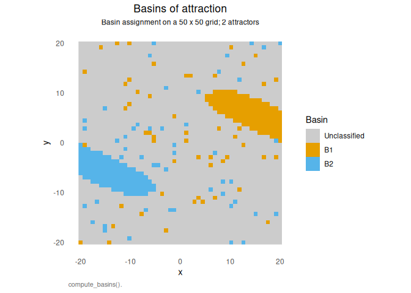
Computational complexity
Understanding the computational cost helps choose appropriate resolutions:
| Function | Complexity | Description |
|---|---|---|
compute_newton_basins() |
\(O(N^2 \cdot k)\) | Very fast: \(N^2\) points, \(k\) Newton iterations |
compute_basins() |
\(O(N^2 \cdot T/\Delta t)\) | Slower: \(N^2\) grid points with ODE integration |
wada_grid_method() |
\(O(B \cdot 2^d)\) | \(B\) boundary boxes, \(d\) refinement depth |
wada_merging_method() |
\(O(N_A \cdot B^2)\) | \(N_A\) basins, pairwise Hausdorff on \(B\) boundary points |
basin_entropy() |
\(O(N^2 / s^2)\) | Fast: just counting over boxes of size \(s\) |
where \(N\) = resolution, \(T\) = t_max, \(\Delta t\) = dt, \(B\) = boundary points, \(d\) = max_refinements.
Recommendations: - Start with Newton fractals for exploration (very fast) - Use resolution 100-200 for pendulum exploration - Increase to 400-500 only for publication-quality results
Method selection guide
| Method | Best for | Speed | Accuracy | Input required |
|---|---|---|---|---|
| Merging | Quick screening | Fast | Medium | Basins matrix |
| Grid | Final confirmation | Medium | High | Basins matrix |
| Basin entropy | Unpredictability quantification | Fast | N/A | Basins matrix |
Recommended workflow:
- Start with basin entropy for quick characterization
- Use merging method for quick Wada screening
- Confirm with grid method for higher accuracy
Function reference
Basin computation
| Function | Description |
|---|---|
compute_basins() |
Compute basins of attraction for 2D dynamical systems |
compute_basins_3d() |
Compute basins of attraction in 3D parameter space |
compute_newton_basins() |
Specialized function for Newton fractal basins (fast) |
get_boundary() |
Extract boundary points from basin matrix |
merge_basins() |
Create two-color basin maps for analysis |
Custom systems
| Function | Description |
|---|---|
compiled_system() |
Create user-defined dynamical systems with C++/OpenMP compilation |
compile_basin_function() |
Lower-level function for compiling dynamics to C++ |
attractor_point() |
Define a fixed-point attractor |
attractor_cycle() |
Define a limit cycle attractor |
attractor_exit() |
Define an escape exit |
attractor_outcome() |
Define a discrete outcome |
Bifurcation analysis
| Function | Description |
|---|---|
bifurcation_basins() |
Compute basins across parameter values |
animate.bifurcation_result() |
Animate basin evolution |
extract_basin() |
Extract single basin result at parameter value |
3D visualization
| Function | Description |
|---|---|
plot_3d_basins() |
Interactive 3D visualization (plotly) |
slice_3d_basins() |
Extract 2D slices from 3D results |
animate_3d_rotation() |
Animate 3D basin rotations |
Wada detection
| Function | Description |
|---|---|
wada_grid_method() |
Grid refinement method |
wada_merging_method() |
Boundary merging method |
wada_straddle_method() |
Saddle-straddle method |
detect_wada() |
Unified interface for multiple methods |
hausdorff_distance() |
Compute Hausdorff distance between point sets |
basin_entropy() |
Quantify unpredictability using basin entropy |
Example systems
| Function | Description |
|---|---|
forced_damped_pendulum() |
Forced damped pendulum (Wada for F \(\approx\) 1.66) |
henon_heiles_system() |
Henon-Heiles Hamiltonian (escape basins) |
newton_fractal_system() |
Newton method fractals for \(z^n - 1 = 0\) |
Utilities
| Function | Description |
|---|---|
palettes() |
Access the koloRo palette catalogue (okabe_ito built-in fallback) |
palette_ramp() |
Interpolate any koloRo palette to N colors |
shinywadaR() |
Interactive Shiny dashboard for exploring Wada basins |
Interactive exploration: shinywadaR()
The package includes an interactive Shiny application for exploring Wada basins without writing code:
# Launch the interactive dashboard
shinywadaR()Features of the Shiny dashboard
The shinywadaR() function launches a comprehensive dashboard built with shinydashboard, featuring:
Interactive tabs
| Tab | Description |
|---|---|
| Pendulum basins | Compute and visualize basins for the forced damped pendulum with adjustable parameters |
| Newton fractals | Generate Newton fractal basins for \(z^n - 1 = 0\) with customizable resolution |
| Basin entropy | Compute and visualize local entropy maps |
| Wada detection | Apply grid and merging methods to test for Wada property |
| Theory tabs | Mathematical background on Wada basins, detection methods, and limitations |
| Competition model | Explore Huisman-Weissing competitive chaos (advanced) |
Built-in theory and documentation
The dashboard includes extensive theory sections covering:
- Mathematical foundations: Definitions of attractors, basins, and the Wada property
- Detection methods: Basin entropy, grid method, merging method, and saddle-straddle method
- Limitations and caveats: Resolution dependence, parameter sensitivity, partial Wada basins
- Best practices: Recommended workflows and parameter choices
Technical implementation
# The dashboard is built with:
# - shinydashboard: For the dashboard layout
# - shiny: For reactive components
# - ggplot2/plotly: For interactive visualization
# - wadaR core functions: For all computations
# You can also run it with a custom port:
shinywadaR(port = 3838)Screenshot
The dashboard provides an intuitive interface for:
- Parameter exploration: Adjust forcing amplitude, damping, resolution in real-time
- Method comparison: Compare results from different Wada detection methods
- Interactive plots: Zoom, pan, and hover over basins for detailed information
- Educational content: Learn the mathematical theory behind Wada basins
References
This package implements algorithms from the following foundational works:
[1] Kennedy, J., & Yorke, J. A. (1991). Basins of Wada. Physica D: Nonlinear Phenomena, 51(1-3), 213-225. doi:10.1016/0167-2789(91)90234-Z
[2] Daza, A., Wagemakers, A., Sanjuán, M. A. F., & Yorke, J. A. (2015). Testing for basins of Wada. Scientific Reports, 5, 16579. doi:10.1038/srep16579
[3] Daza, A., Wagemakers, A., & Sanjuán, M. A. F. (2018). Ascertaining when a basin is Wada: the merging method. Scientific Reports, 8, 9954. doi:10.1038/s41598-018-28119-0
[4] Daza, A., Wagemakers, A., Georgeot, B., Guéry-Odelin, D., & Sanjuán, M. A. F. (2016). Basin entropy: a new tool to analyze uncertainty in dynamical systems. Scientific Reports, 6, 31416. doi:10.1038/srep31416
[5] Wagemakers, A., Daza, A., & Sanjuán, M. A. F. (2020). The saddle-straddle method to test for Wada basins. Communications in Nonlinear Science and Numerical Simulation, 84, 105167. doi:10.1016/j.cnsns.2020.105167
[6] Aguirre, J., Viana, R. L., & Sanjuán, M. A. F. (2009). Fractal structures in nonlinear dynamics. Reviews of Modern Physics, 81(1), 333-386. doi:10.1103/RevModPhys.81.333
[7] Grebogi, C., McDonald, S. W., Ott, E., & Yorke, J. A. (1983). Final state sensitivity: An obstruction to predictability. Physics Letters A, 99(9), 415-418. doi:10.1016/0375-9601(83)90945-3
[8] Lorenz, E. N. (1963). Deterministic nonperiodic flow. Journal of the Atmospheric Sciences, 20(2), 130-141. doi:10.1175/1520-0469(1963)020<0130:DNF>2.0.CO;2
Getting help
# Function documentation
?compute_basins
?compute_newton_basins
?wada_grid_method
?wada_merging_method
?basin_entropy
# Package overview
?wadaRCitation
If you use wadaR in publications, please cite:
@Manual{wadinger2025,
title = {wadaR: Wada basins of attraction in chaotic dynamical systems},
author = {Pablo Almaraz},
year = {2025},
note = {R package version 0.2.0},
url = {https://github.com/robustecologies/wadaR}
}Contributing
Contributions are welcome! Please feel free to:
- Report bugs at https://github.com/robustecologies/wadaR/issues
- Suggest new features
- Submit pull requests
Disclaimer
This package is the original creation of the author in all conceptual, theoretical, and design aspects. Implementation was assisted by Anthropic’s Claude Code v.2 (Opus 4.5-4.7) to streamline package development. All original ideas, creativity, and scientific contributions belong to the author, who maintains full responsibility for the package’s correctness and reliability. While all code has been thoroughly reviewed and tested, users are encouraged to report any issues through the package’s issue tracker.